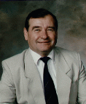

Lyndon B. Johnson Space Center
Houston, Texas 77058
|
National Aeronautics and Space Administration Lyndon B. Johnson Space Center Houston, Texas 77058 |
 |
Biographical Data |
||
NAME AND SUR Gennady Mikhailovich Strekalov
Instructor-Test-Cosmonaut and Department Head at RSC Energia.
Resides in Kaliningrad, Moscow Region.
PLACE AND DATE OF BIRTH: 26 October 1940, Mytishohi Moscow region, Russia.
PARENTS: Mikhail Ivanovich Strekalov, Father, perished at the front in 1945. Praskovya Mikhailovna Strekalova (nee Amosova), Mother, resides in Kaliningrad, Moscow Region.
EDUCATION: Graduated from N.E. Bauman Moscow Higher Technical School in 1965 with an engineer's diploma.
FAMILY STATUS: Married to Lydia Anatolievna Strekalova (nee Telezhldna). Their daughter, Tatiana, was born in 1974; their daughter, Natalia, in 1975.
HONORS: Awarded three Orders of Lenin, two Gold Star medals, and the Order of People's Friendship.
WORK EXPERIENCE: G. M. Strekalov has worked as an engineer at RSC Energia since graduation from the N. E. Bauman Moscow Higher Technical School. He was involved in experimental investigations and testing of space technology. He holds the degree of candidate of technical sciences. He independently developed and released documentation for a series of enterprise-related products. As part of an operations group, he participated in mission control for flights of scientific research vehicles belonging to the Academy of Sciences. In January 1974, he began training as a crew member for a mission aboard the Soyuz spacecraft as a flight engineer and, in 1976, was part of the backup crew of the Soyuz of the Soyuz-22 mission.
Starting October 1978, he underwent flight training to be the flight engineer for a Soyuz expedition to visit the long-term Salyut space station. From 27 November to l0 December 1980, he successfully completed an experimental mission aboard the Soyuz-T-3 spacecraft as a research engineer as part of the crew comprised of L. D. Kizim, O. G. Malcarov, and G. M. Strekalov. During the flight, a docking of the Soyuz-T-3 spacecraft with the Salyut-6-Process-11 orbital complex was accomplished.
From June 1981 to April 1983, he underwent direct flight training to be the flight engineer of the primary expedition for a mission aboard the Soyuz-T spacecraft and the long-term Salyut-7 orbiting station. In the period from 20 - 22 April 1983, he flew aboard the Soyuz T-8 spacecraft as part of a crew comprised of V. G. Titov, G. M. Strekalov, and A. A Screbrov.
From 3 to 11 April 1984, he participated in a third space mission aboard the Salyut-7 orbital scientific-research complex as part of an international Soviet-Indian crew comprised of Yu. V. Malishev, G. M. Strekalov, and R. Sharma, of India.
In the period from 1 August to 10 December 1990, he completed a fourth space fight as flight engineer of the seventh primary expedition to the Soyuz-TM-10 station and the Mir orbital scientific-research complex as part of a crew comprised of G. M. Manakov and G. M. Strekalov.
At the completion of the fourth flight, G. M. Strekalov accumulated 153 days in space.
At present, he is undergoing flight training to be the flight engineer for a primary crew of a Russian-American space flight.
{kind=link}